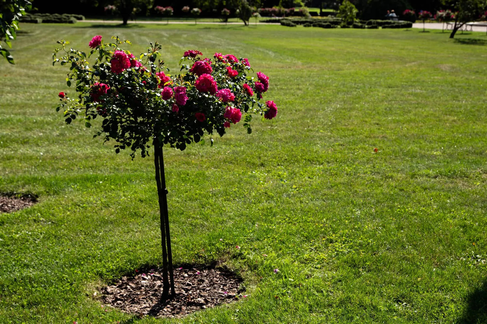

Winter lawn care is a topic of great importance for homeowners who take pride in their outdoor spaces. The cold temperatures, frost, and snow can all pose significant challenges to the health and vitality of grass.
However, by understanding the unique needs of your lawn during this time and implementing the right strategies, you can ensure that your grass stays alive and thrives even in the coldest of winters.
Understanding Winter Stress On Grass
A. How Winter Weather Affects Your Lawn
The cold temperatures can cause the grass to go dormant, meaning it stops growing and turns brown. This is a natural defense mechanism to protect the grass from the harsh conditions. Snow and ice can also damage the grass by smothering it or causing it to break under the weight.
B. Grass Varieties And Winter Hardiness
Different grass varieties have varying levels of winter hardiness. Some grasses, like Kentucky bluegrass and fescue, are more tolerant of cold temperatures and can survive better in winter. Others, like Bermuda grass, are less hardy and may require extra care to keep them alive.
Preparing Your Lawn For Winter
A. Late Fall Lawn Care
1. Mowing And Cleanup: You should mow your lawn and clean up any debris. This helps to prevent the grass from matting down and allows for better air circulation.
2. Fertilization For Winter Readiness: Fertilize your lawn with a winter-ready fertilizer. This will provide the grass with the necessary nutrients to survive the winter and promote healthy growth in the spring.
B. Pest And Weed Control
1. Dealing With Late-Season Issues: Pest and weed control is also important in late fall. Take care of any pest or weed issues before winter sets in. This will prevent them from causing further damage to your grass during the winter months. Additionally, consider using preventative measures to keep pests away from your lawn during winter.
2. Preventing Winter Lawn Pests: When it comes to protecting your lawn from snow and ice, there are a few strategies you can employ. Firstly, be careful when removing snow from your lawn. Use a snow blower or shovel with a plastic blade to avoid damaging the grass. Secondly, use ice control methods that are safe for your grass.
Avoid using salt or chemical deicers, as they can harm the grass. Instead, use sand or kitty litter to provide traction on icy areas.
Lawn Protection Strategies
A. Snow And Ice Management
1. Snow Removal Without Harming Grass: Be careful when removing snow from your lawn. Use a snow blower or shovel with a plastic blade to avoid damaging the grass.
2. Ice Control Methods: Use ice control methods that are safe for your grass. Avoid using salt or chemical deicers, as they can harm the grass. Instead, use sand or kitty litter to provide traction on icy areas.
B. Creating Winter Microclimates
1. Using Windbreaks And Barriers: Creating winter microclimates can also help protect your grass. Windbreaks and barriers, such as fences or shrubs, can shield your lawn from strong winds that can damage the grass.
2. Temporary Plant Coverings: You can use temporary plant coverings, like burlap or frost blankets, to protect the grass from extreme cold temperatures.
Proper Lawn Mowing In Winter
A. The Role Of Winter Mowing
Many people assume that lawn mowing is not necessary during the winter months. However, regular mowing is still important to maintain the health of your grass.
Winter mowing helps to prevent the grass from becoming too long and developing snow mold, which can suffocate the grass blades and lead to disease.
Additionally, mowing helps to improve air circulation and allows sunlight to reach the lower parts of the grass, promoting growth and preventing the accumulation of debris.
B. Mowing Height And Frequency
During the winter, it is recommended to adjust the mowing height slightly higher than usual. This helps to protect the grass from cold temperatures and potential damage. However, it is important not to let the grass become too long, as this can create an ideal environment for pests and diseases. Aim to mow your lawn regularly, but avoid cutting more than one-third of the grass blade’s height at a time.
C. Using The Right Equipment In Cold Weather
Cold weather can affect the performance of your lawn mower. It is essential to ensure that your equipment is in proper working condition before mowing your lawn.
Check the oil, spark plug, and air filter, and make sure the blades are sharp. Additionally, consider using a mower with larger wheels, as this will help prevent the mower from sinking into wet or snowy ground.
Encouraging Winter Growth
A. Promoting Grass Recovery In Late Winter
Late winter is an ideal time to promote grass recovery and prepare it for the upcoming spring season. Remove any debris or dead leaves from your lawn to allow sunlight to reach the grass.
Consider dethatching if your lawn has a thick layer of dead grass or moss. This will help improve air circulation and promote new growth.
B. Early Spring Lawn Care Planning
While it may still be winter, it’s never too early to start planning for your spring lawn care routine. Consider scheduling aeration and overseeding for your lawn.
Aeration helps to alleviate soil compaction and allows nutrients and water to reach the grassroots. Overseeding helps to fill in any bare patches and promotes a fuller and healthier lawn.
Planning these tasks in advance will ensure that you are prepared to take action as soon as the weather permits.
C. Aeration And Overseeding For Winter Resilience
Aeration and overseeding can also be beneficial during the winter months. By aerating your lawn, you create small holes that allow water and nutrients to penetrate the soil.
This helps to prevent waterlogging and allows the grassroots to breathe. Overseeding introduces new grass seeds into your lawn, which will germinate and establish themselves during the winter, giving your lawn a head start for the spring.
Troubleshooting Winter Lawn Problems
A. Identifying Common Winter Lawn Issues
1. Winter Dormancy: During winter, grass goes into a state of dormancy, where it slows down its growth and turns brown. This is a natural survival mechanism to protect the grass from the harsh winter conditions. However, if your lawn remains brown even after winter, it may indicate a problem.
2. Frost Damage: Frost can cause damage to grass blades, leading to browning and discoloration. It is especially common in areas with freezing temperatures. Frost damage can weaken the grass and make it more susceptible to diseases and pests.
3. Snow Mold: Snow mold is a fungal disease that thrives in cold and wet conditions. It appears as circular patches of gray or pinkish mold on the grass. Snow mold can damage the grass and hinder its growth if left untreated.
B. Solutions For Winter Damage And Disease
1. Proper Mowing: Before winter arrives, it is important to mow your lawn at the appropriate height. Cutting the grass too short can stress it and make it more vulnerable to winter damage. Aim to keep the grass at a height of around 2–3 inches.
2. Aerate the Soil: Aerating the soil before winter can improve drainage and prevent waterlogging, which can lead to snow mold. Use a lawn aerator to create small holes in the soil, allowing air, water, and nutrients to reach the grassroots.
3. Remove Leaves and Debris: Keep your lawn clear of fallen leaves and debris. Leaves left on the grass can block sunlight and trap moisture, creating an ideal environment for diseases. Regularly rake or use a leaf blower to remove any buildup.
Having a resilient, green lawn year-round is a dream for many homeowners. It not only enhances the aesthetic appeal of your property but also provides a space for outdoor activities and relaxation.
However, maintaining a healthy lawn during the winter months can be challenging. That’s where Big Easy Lawn Care comes in.
With our expertise and experience in winter lawn care, you can trust us to do an exceptional job. By entrusting your lawn to us, you can enjoy the rewards of a successful winter lawn care routine, ensuring that your lawn remains lush and vibrant even in the coldest months.
Lawn care in New Orleans follows its own calendar, with near year-round growth and mild winters rather than long dormancy. We plan seasonal care around how Gulf-region lawns actually behave.
Contact us today to let our lawn care professionals address your needs.